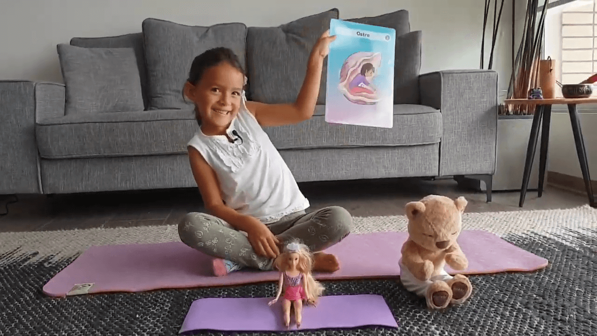

🎉 Mil gracias por todos vuestros hermosos mensajes por los videos de Luz.
☆
Le he leído cada mensaje y comentario 💜🙏
☆
Hoy quiere mostrarles una nueva postura de yoga: la Ostra (Paschimottanasana) o “gostra” (como lo dice con su mezcla de idiomas) 🥰
☆
Aquí por mi lado, les comparto algunos de los beneficios de realizar esta postura:
- Gran estiramiento de los músculos posteriores de las piernas. * Poco a poco se obtiene una gran flexibilidad.
- Sirve para entrenar otras asanas y de calentamiento. * Alivia el dolor de ciática.
- Se produce un gran estiramiento de los músculos de la espalda, ya que la flexión es hacia delante.
- Al estirar los músculos de la espalda, los tonificamos y fortalecemos. Esto es muy positivo para prevenir y aliviar la escoliosis y otros problemas de dolor de espalda derivados de mantener una mala postura.
- También se estiran los brazos, ya que tienen que llegar a tocar los pies.
- Sirve para evaluar nuestro progreso. Al principio nos falta mucho para llegar a agarrar los pies, luego falta menos, luego un poquito… hasta que llegamos y es muy gratificante.
#YOMEQUEDOENCASA 🏡
